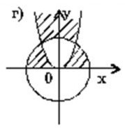

Вариант 2
Проверить принадлежность точки , координаты которой вводит пользователь (x, y – действительные числа) , заштрихованной области или ее границе . На рисунках даны окружности с единичным радиусом и парабола y=x2.
